Kovoobráběcí a tvářecí stroje s garancí předvedení v chodu
Dodáváme prověřené obráběcí stroje renomovaných značek TOS, ŠKODA, Kovosvit, GILDEMEISTER či ZPS. Každý stroj prochází důkladnou kontrolou geometrií, je zapojen pod proudem a připraven k okamžitému předvedení na naší zkušebně v Blansku.
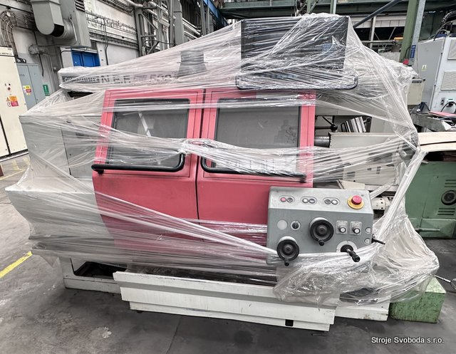
CNC soustruh NEF Plus 500
Katalog průmyslových kovoobráběcích a tvářecích strojů
Vyberte si ze široké nabídky strojního vybavení. Všechny stroje jsou uskladněny v suchých vytápěných halách a připraveny k okamžitému předvedení a odběru.
CNC soustruh
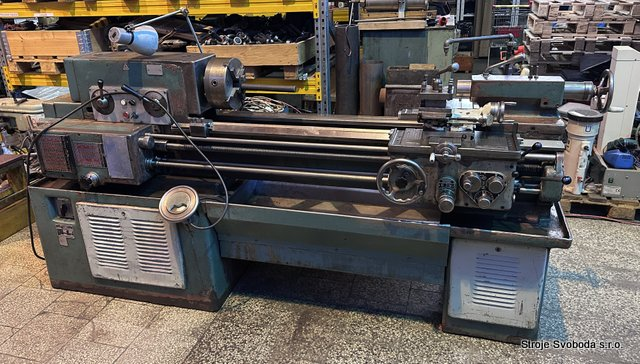
SoustruhSoustruh hrotový
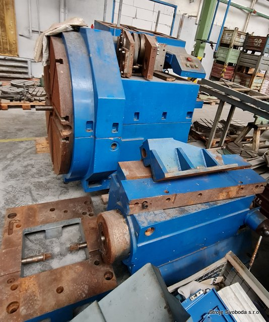
SoustruhSoustruh hrotový těžký
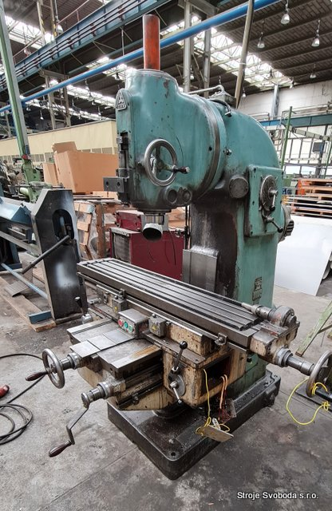
FrézkaFrézka svislá
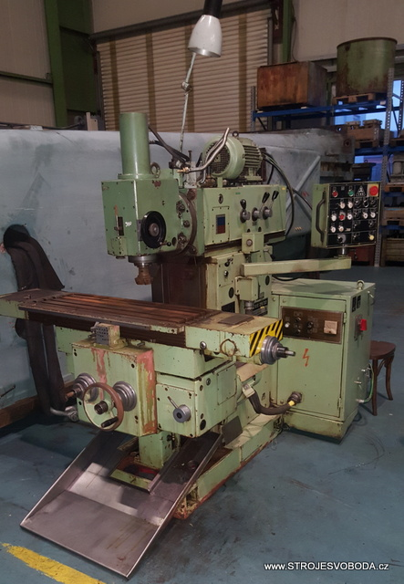
FrézkaFrézka konzolová
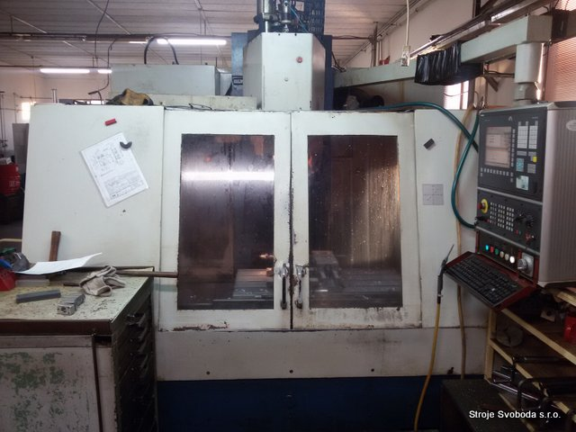
FrézkaVertikální obráběcí centrum
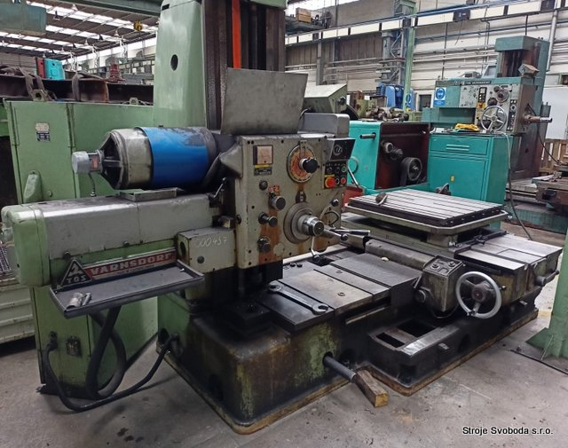
Horizontální vyvrtávačkaVyvrtávačka vodorovná
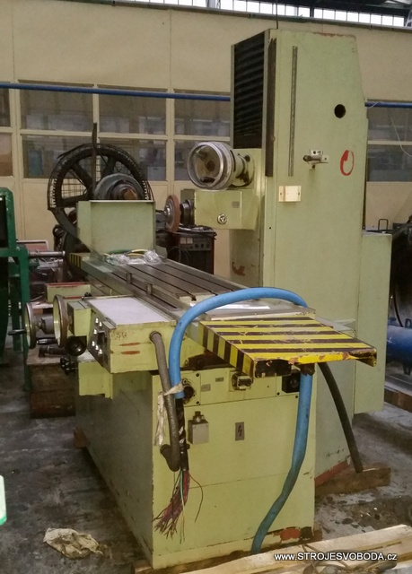
BruskaBruska rovinná vodorovná
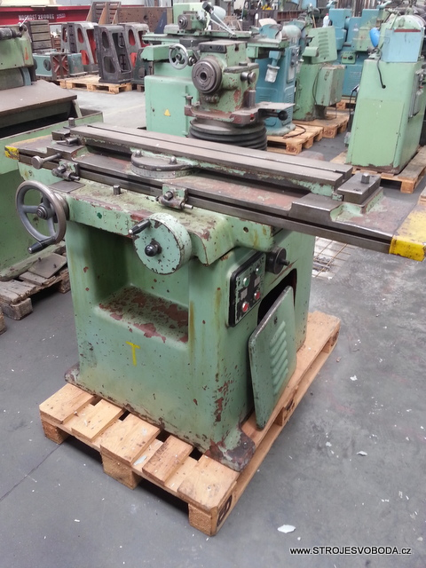
BruskaBruska nástrojová univerzální
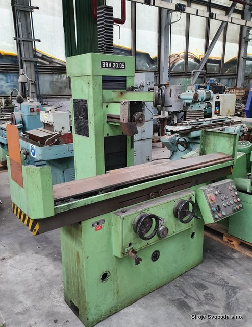
BruskaBruska rovinná vodorovná
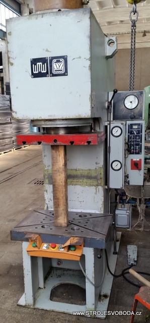
LisLis hydraulický jednočinný
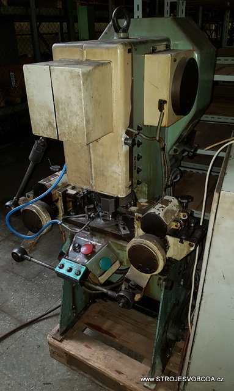
LisLis výstředníkový
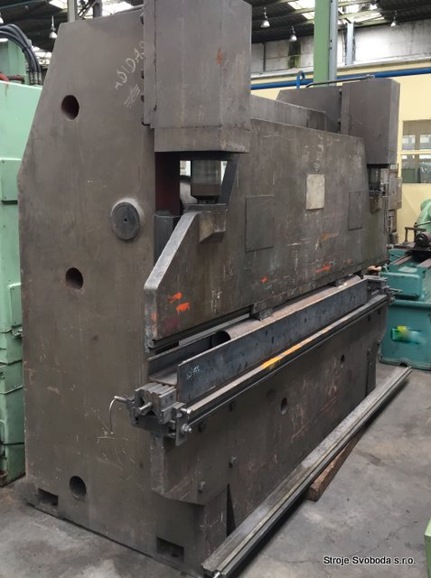
LisLis ohraňovací hydraulický
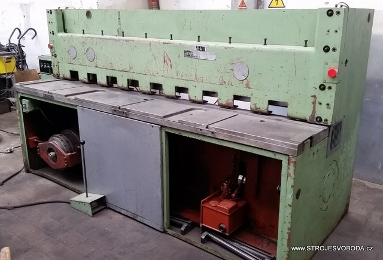
NůžkyNůžky tabulové
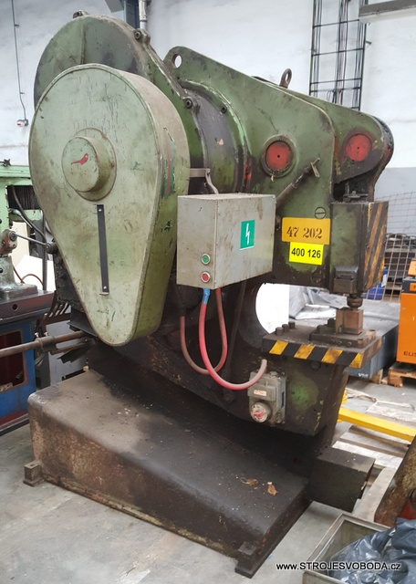
NůžkyUniverzální nůžky na profily
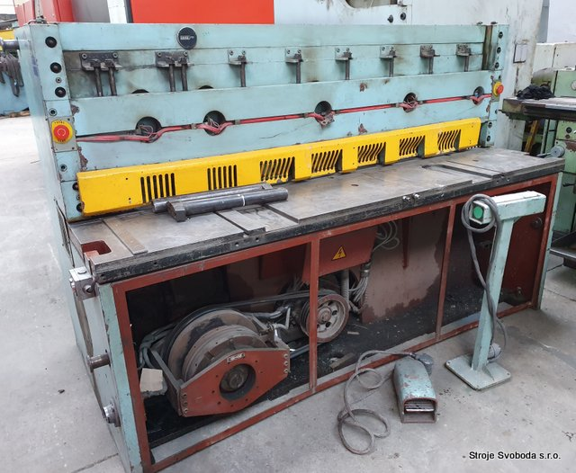
NůžkyTabulové nůžky motorické
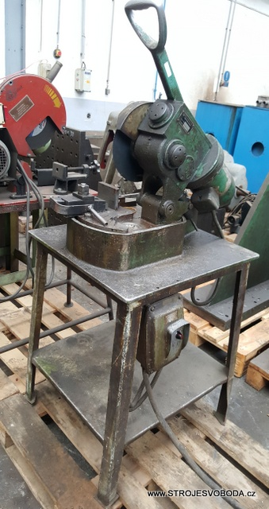
PilaPila kotoučová na kov
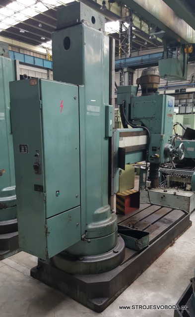
VrtačkaVrtačka otočná radiální
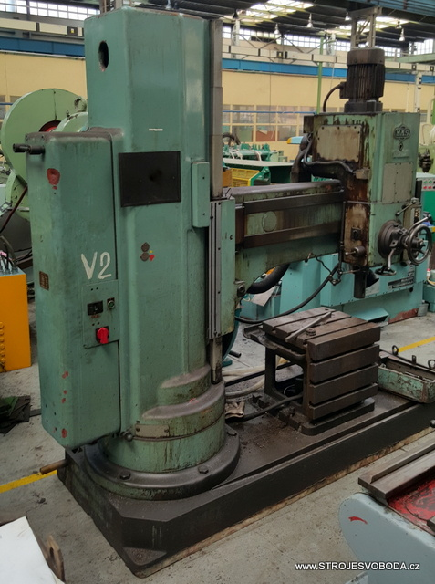
VrtačkaVrtačka otočná těžká
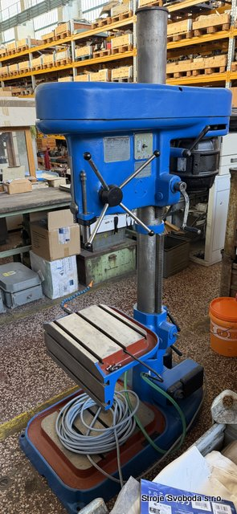
VrtačkaVrtačka sloupová
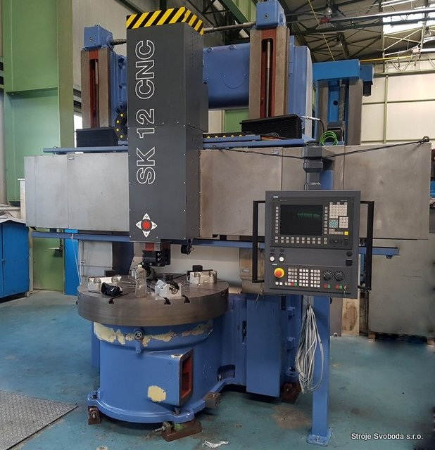
KaruselSoustruh svislý - karusel
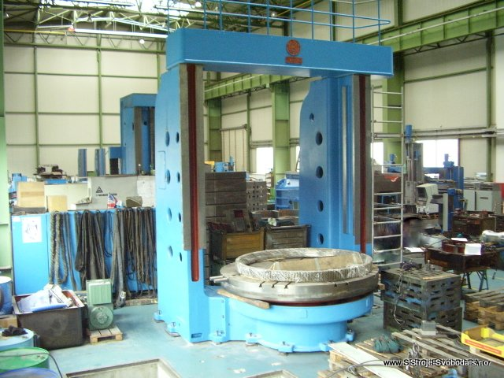
KaruselDvoustojanový svislý soustruh
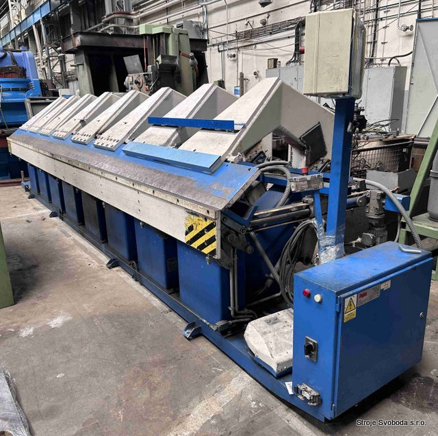
OhýbačkaHydraulická ohýbačka plechů
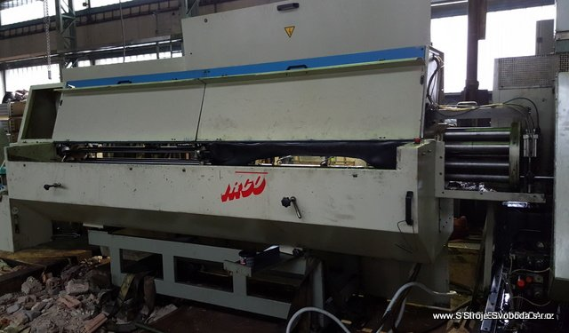
PříslušenstvíPodavač tyčí pro CNC soustruhy
Odborné služby pro strojírenské provozy
Kromě prodeje a dodávek strojního parku poskytujeme kompletní technický servis, generální opravy i výkup přebytečného strojního vybavení.
Prodej a dovoz strojů
Široký výběr klasických i CNC soustruhů, frézek, brusek, horizontálních vyvrtávaček, lisů a nůžek. Zajišťujeme odborné nakládky, přepravu a bezpečné složení na místo určení.
- Předvedení funkčnosti pod proudem
- Ověření geometrické přesnosti
- Kompletní technická dokumentace
Generální opravy a střední opravy
Komplexní obnova přesnosti obráběcích strojů (TOS, ŠKODA, Kovosvit). Provádíme broušení a zaškrabávání vodících ploch, výměny ložisek, opravy převodovek a vřeten.
- Přesné ruční zaškrabávání loží
- Protokol přesnosti podle ČSN ISO
- Renovace elektroinstalace a rozvaděčů
Modernizace & CNC Retrofitting
Přestavby konvenčních i starších CNC strojů na moderní řídicí systémy Siemens Sinumerik nebo Heidenhain. Zvýšení produktivity a spolehlivosti starších tuhých litinových strojů.
- Digitální odměřování polohy v osách
- Instalace servopohonů a měničů
- Zaškolení obsluhy a programování
Výkup strojů a protiúčet
Vykupujeme jednotlivé stroje i celé výrobní celky při modernizaci či rušení provozů. Nabízíme rychlé odborné posouzení, férové ocenění a okamžitou platbu.
- Rychlé technické ocenění stroje
- Vlastní zajištění demontáže a odvozu
- Možnost protiúčtu za jiný stroj
Areál ADAST Blansko: Vlastní zkušebna a skladovací haly
Naše společnost sídlí a působí v tradičním strojírenském areálu ADAST v Blansku na ulici Svitavská 2397. Disponujeme rozsáhlými krytými halami s jeřábovou technikou o nosnosti až 20 tun, což nám umožňuje manipulaci i s nejtěžšími obráběcími stroji a lisy.
Parametry areálu v Blansku
Kontaktní centrum STROJE SVOBODA
Máte zájem o předvedení stroje, poptáváte konkrétní model nebo potřebujete provést servis? Kontaktujte naše specialisty.
Vedení a obchodní oddělení
STROJE SVOBODA s.r.o.Poptávkový formulář
Vyplňte požadovaný stroj či službu a naši technici vás budou kontaktovat s podrobnou technickou nabídkou.